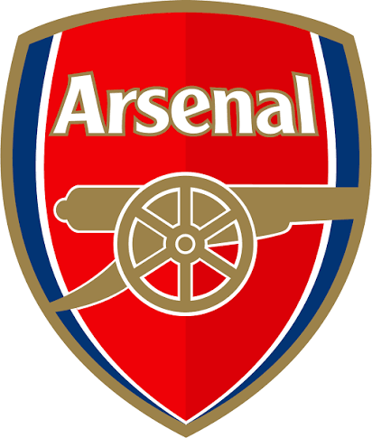
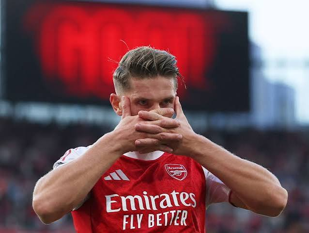

In this website,you will see all Arsenal content like latest news transfers,scores and trophies
HomeThis website helps Arsenal fans understand matches using player ratings, statistics, and match analysis. If you support Arsenal,this website is perfect for you.
AboutAbout the website Our goal is to help football fans compare players, review previous matches, and discover who performed best using statistics.
PlayerStatsThis month's top performer is Viktor Gyokeres. Goals 15 Assists 8 Average Rating 9.4/10

Use this number to call us for any bugs!-073988821> Use this link to see more Arsenal! Back to top of page